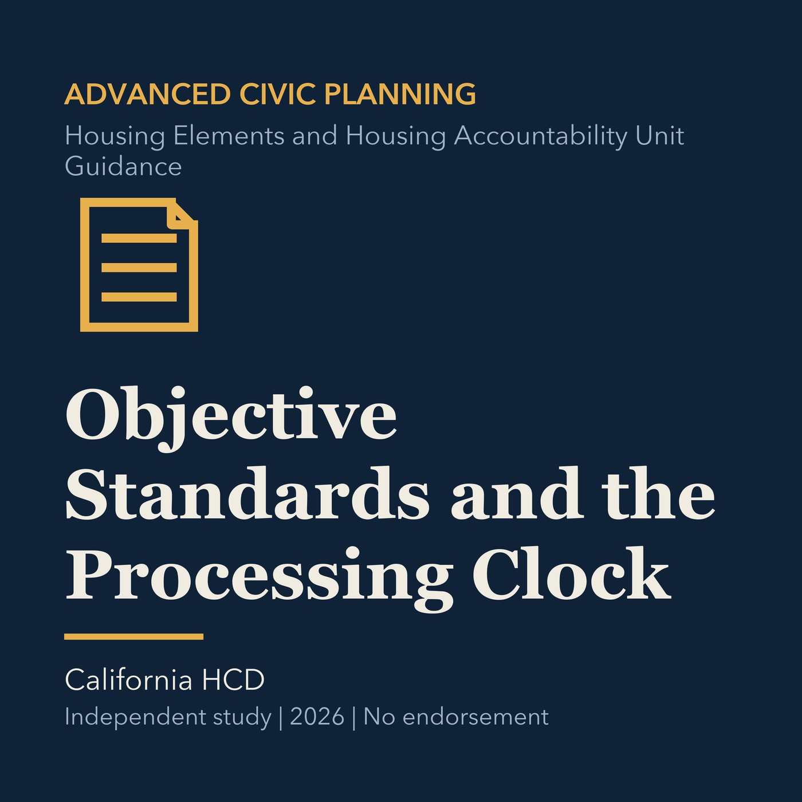

EPISODE 21
Objective Standards and the Processing Clock
Separates objective standards from discretion and tracks review deadlines that change local process.

- Stable GUID
fe59ca72-bd62-5ead-a401-0f210867375b- Release
- advanced-civic-planning-v2026.1
- SHA-256
80d760949fb226cc63929c275c7b4b2cbd9ac03378b7924253035b623a2b3664